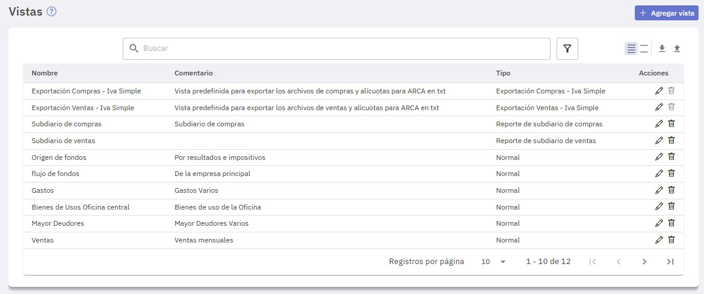
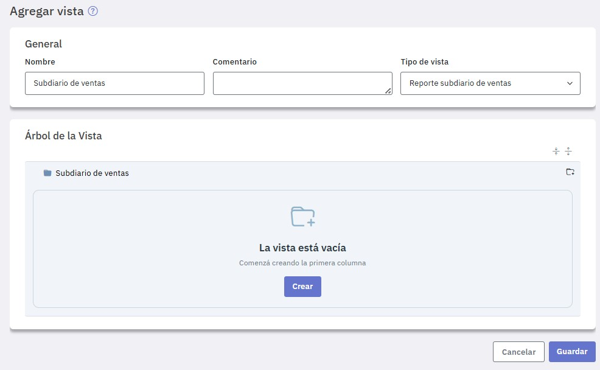
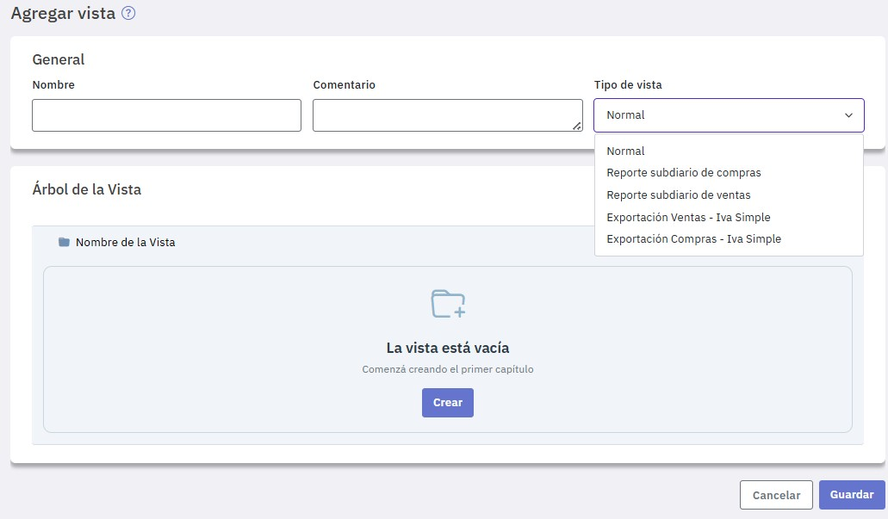
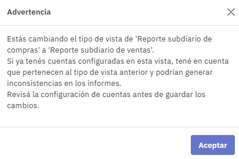
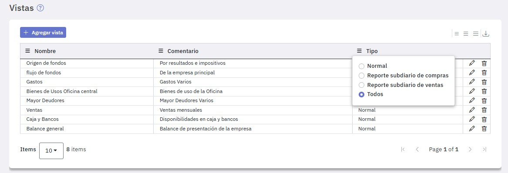

Vistas
Las Vistas son modelos que permiten mostrar la información contable agrupada de diferentes maneras según el tipo de informe a emitir. Se utilizan en la emisión de los siguiente informes:
-
Balances
-
Mayores
-
Centros de costos
-
Subdiarios de ventas
-
Subdiarios de compras
Se utilizan también para generar los archivos de IVA Simple de ventas y compras.
Al ingresar a la pantalla podes ver las vistas que ya definiste, modificarlas, eliminarlas o crear otras nuevas.
Además disponés de dos vistas predefinidas "Exportación Ventas - Iva Simple" y "Exportación Compras - Iva Simple" destinadas a la generación de los archivos de IVA simple para su posterior importación en ARCA.

Para dar de alta una vista presioná "Agregar vista".

Según a que informe esté destinada la vista, en "Tipo de vista" podes seleccionar:
- Normal (para informes de: Balances, Mayores y Centros de costos)
- Reporte Subdiario de Ventas
- Reporte Subdiario de Compras
- Exportación Ventas - IVA Simple
- Exportación Compras - IVA Simple

Para ver como definir un formato Normal consultá: Vistas normales
Para ver como definir un formato de subdiario consultá: Vistas de reportes de ventas y compras
Para ver como definir formatos para la exportación de ventas y compras destinadas al IVA simple consultá: Generación de archivos de IVA Simple para ARCA
Todas las vistas que definís se muestran en la pantalla de ingreso y podés editarlas para modificarlas o eliminarlas solo tenes que tener en cuenta que, si luego de definir una vista de tipo compras, la queres modificar a ventas, o viceversa, se pueden presentar inconsistencias, el sistema te avisa de tal situación.

Definidas las vistas, si solo querés ver las de determinado tipo, en la columna "Tipo", seleccioná el que corresponda.

Si presionás el ícono "Exportar a Excel" obtenés una planilla que contiene una hoja por cada una de las vistas que definiste.